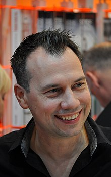

Двенадцатилетняя дочь известного берлинского психиатра Виктора Ларенца,
Жози, исчезла при таинственных обстоятельствах. Прошло четыре года.
Скорбящий отец уехал в заброшенный дом на острове.
Его общества навязчиво
ищет красивая незнакомка, которую мучают видения. Ей является девочка, бесследно пропавшая,
как когда-то Жози. Виктор начинает терапию, которая все больше напоминает драматический допрос.

Моя любимая книга
Honorovich Anton Andreevich
Название книги: Терапия
Автор: Себастьян Фитцек
Жанр: Детектив с психологической составляющей
Год первого издания: 2019 год
Краткое описаниe

Про Автора
Себастьян Давид Фитцек
Год рождения - 13 октября 1971 года
Немецкий писатель и журналист. Его первая книга, « Терапия» ( dt. Die Therapie ), стала бестселлером в Германии в 2006 году, опровергнув « Код да Винчи» с первой позиции. Фитцек в настоящее время является одним из самых успешных писателей Германии. Себастьян Фитцек
Содержание
Пролог
Глава1
Глава2
Глава3
Глава4
Глава5
Глава6
Глава7
Глава8
Глава9
Глава10
Глава11
Глава12
Глава13
Глава14
Глава15
Глава16
Глава17
Глава18
Глава19
Глава20
Глава21
Глава22
Глава23
Глава24
Глава25
Глава26
Глава27
Глава28
Глава29
Глава30
Глава31
Глава32
Глава33
Эпилог
Благодарности
Примечания